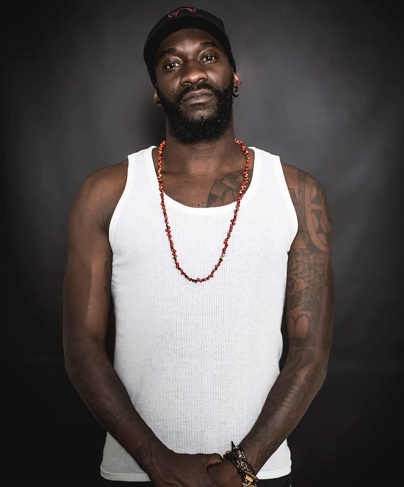
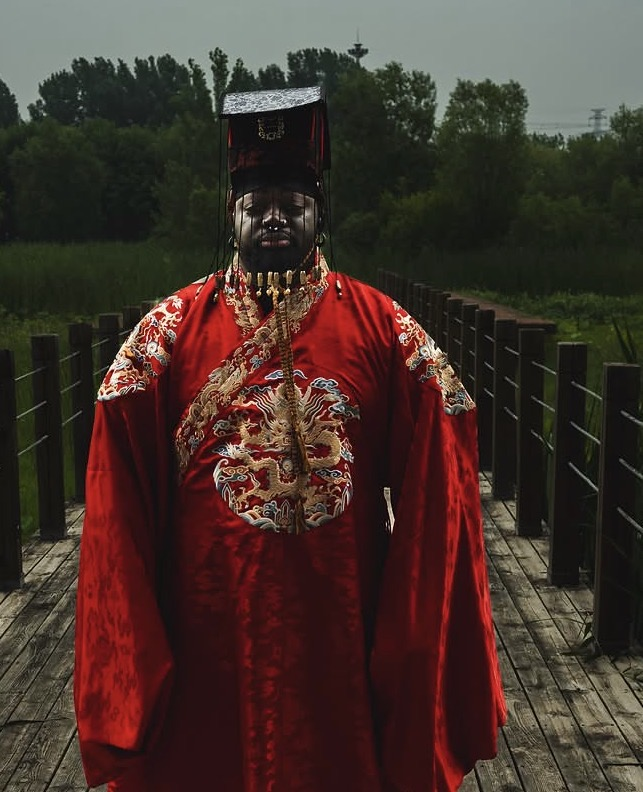

DJSuisse
Alix
Musique Krump
DIMANCHE 28 FÉVRIER 2027 · B CLUB GENÈVE
La musique du Kartel Hip-Pop Battle.
Voir les juges & guests ↗
DJSuisse
Musique Krump
Suède
Musique All Styles & Popping

DJFrance
Musique Hip-Hop
MERCI POUR VOTRE SOUTIEN


ORGANISATION